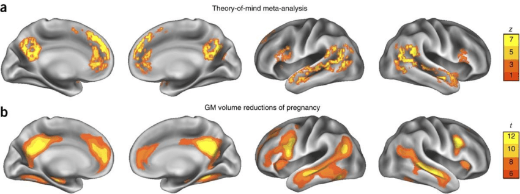
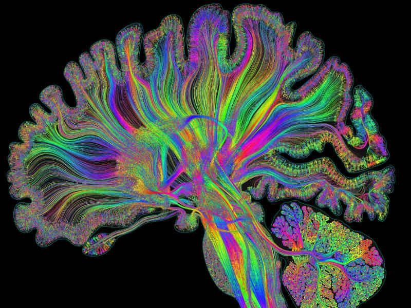
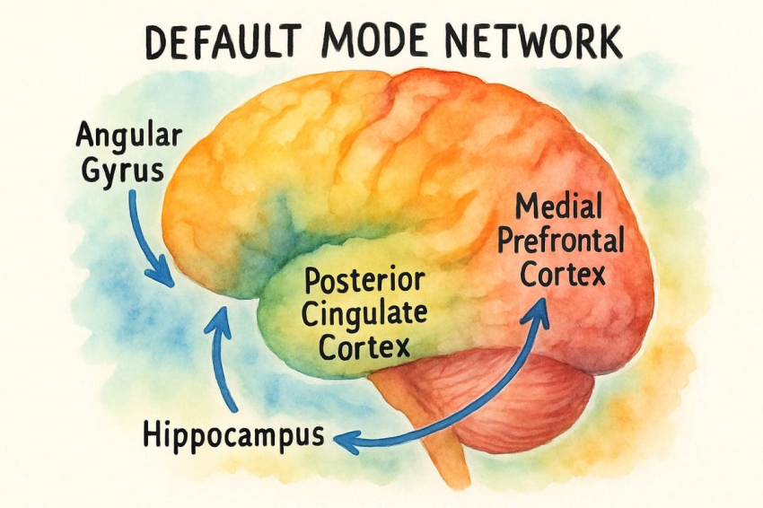
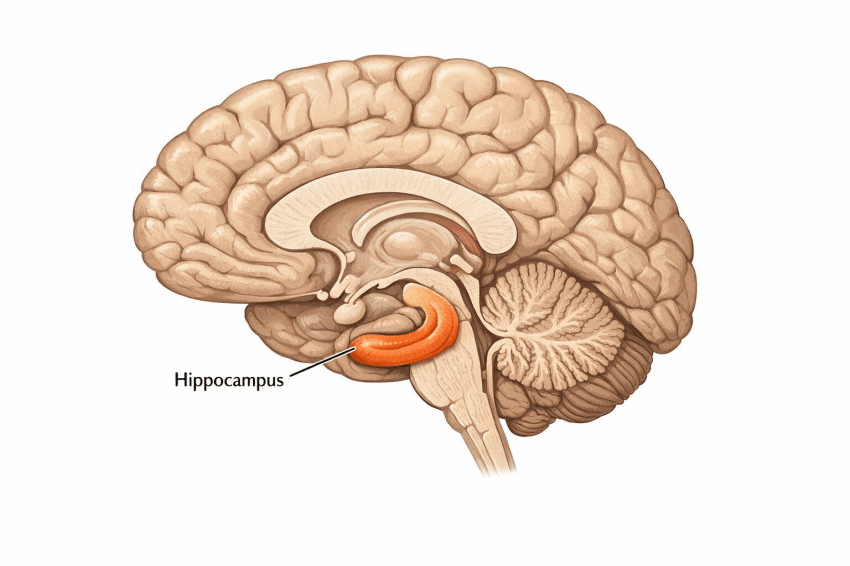
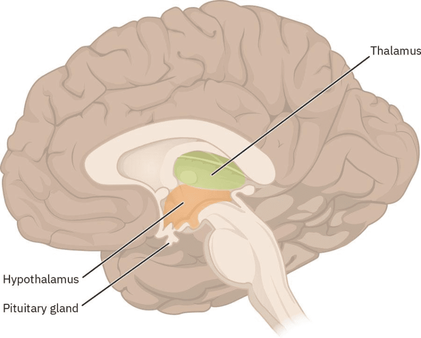
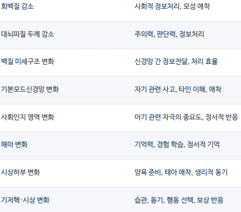

기존에도 임신하면 성향이 어느 정도 변한다는 연구는 있었지만 점점 과학이 발전하면서
변하는 정도가 거의 자아 세탁 수준이라는 게 밝혀짐

회백질 부피 감소
신경세포의 세포체, 수상돌기, 시냅스, 교세포 등을 포함하는 조직으로, 대뇌피질과 여러 피질하 구조에 분포하는 회백질(gray matter)이 대규모개편됨
임신 중 대뇌피질의 회백질 부피가 광범위하게 감소한다는 사실은 서로 다른 연구진이 반복 확인됨
연구 A — Servin-Barthet et al. (2025)


신경망과 뇌 기능의 변화
신경망(DMN) 변화 - 자기 자신과 타인을 이해하는 신경망
기본모드신경망(Default Mode Network, DMN)은 여러 뇌 영역이 기능적으로 연결된 대규모 신경망
주요 구성 영역은 내측전전두피질, 후대상피질, 쐐기앞소엽, 각회 등
이 신경망은 다음과 같은 기능과 관련
- 자기 자신에 관한 사고와 자전적 기억
- 다른 사람의 생각과 의도를 추론하는 정신화
- 과거를 회상하고 미래의 상황을 상상하는 과정
- 자기 관련 정보와 사회적 정보를 처리하는 과정
연구 Hoekzema et al. (2022)
- 임신에 따른 뇌 변화가 특히 DMN에 집중
- MRI에서 DMN 관련 회백질 구조가 변화
- 휴지기 기능적 MRI에서 DMN의 시간적 일관성(temporal coherence)이 변화
- 임신 후기 에스트라디올 농도와 신경망 변화 사이의 통계적 연관성이 나타남
- 이러한 변화는 태아와의 유대감, 출산 후 애착 및 일부 양육 행동 지표와도 연관

해마의 변화 - 기억 및 정서와 관련된 영역
해마(hippocampus)는 새로운 일화기억의 형성과 공간적 기억 처리에 중요한 역할
Pritschet et al. (2024)
고해상도 MRI를 통한 해마 하위영역 분석에서 다음 구조의 부피 감소가 관찰되었다.
CA1(기억 형성과 인출에 관여): 부피 감소
CA2/CA3(기억의 연합 및 패턴 처리에 관여): 부피 감소
해마곁피질(맥락 및 기억 관련 정보처리): 부피 감소

시상하부의 변화 호르몬과 생리적 동기 조절
체온, 식욕, 수면, 스트레스 반응, 생식호르몬 조절 등에 관여
연구 — Spalek et al. (2024)
- 전체 여성 107명의 종단 MRI 자료를 분석
- 임신 전후 촬영 여성 50명, 비임신 대조군 57명을 비교
- 시상하부의 앞쪽-위쪽, 결절부 위쪽, 뒤쪽 하위영역에서 부피 감소가 관찰
- 이러한 변화는 임신 중 호르몬 수치와 관련되었다.
- 태아 애착 및 출산 준비 행동(nesting behavior)과도 통계적 연관성이 나타남
기저핵, 시상의 변화
기저핵은 행동 선택, 운동 조절, 습관 형성, 보상학습 등과 관련된 피질하 신경회로의 핵심 구성요소다. 시상은 여러 신경계 사이에서 정보를 조절하는 역할
연구 Pritschet et al. (2024)
임신 전후의 반복 MRI에서 다음 구조들의 재구성이 관찰되었다.
- 미상핵(caudate): 행동 선택과 목표지향적 학습에 관여
- 조가비핵(putamen): 운동 및 습관 관련 정보처리에 관여
기억력 집행기능 변화
연구 — Davies et al. (2018)
전반적 인지기능 : 평균적 감소
기억력: 일부 검사에서 감소

논문
Hoekzema, E., et al. (2017). Pregnancy leads to long-lasting changes in human brain structure. Nature Neuroscience.Pritschet, L., et al. (2024). Neuroanatomical changes observed over the course of a human pregnancy. Nature Neuroscience.Niu, Z., et al. (2025). Communications Biology.Hoekzema, E., et al. (2022). Mapping the effects of pregnancy on resting state brain activity, white matter microstructure, neural metabolite concentrations and grey matter architecture. Nature Communications.Spalek, K., et al. (2024). Pregnancy renders anatomical changes in hypothalamic substructures of the human brain that relate to aspects of maternal behavior. Psychoneuroendocrinology.Servin-Barthet, C., et al. (2025). Pregnancy entails a U-shaped trajectory in human brain structure that is associated with maternal attachment. Nature Communications.Martínez-García, M., et al. (2021). Do Pregnancy-Induced Brain Changes Reverse? The Brain of a Mother Six Years after Parturition. Brain Sciencesraathof, M., et al. (2026). The effects of a second pregnancy on women's brain structure and function. Nature Communications. Davies, S. J., et al. (2018). Cognitive impairment during pregnancy: a meta-analysis. Medical Journal of Australia.
요약
임신으로 인해 나타날 수 있는 뇌기능 변화
1. 애착 성향: 태아나 아기에게 정서적 유대감을 형성하거나 애착을 표현하는 방식이 달라짐
2. 보호 성향: 아기의 안전과 잠재적 위험에 더 민감하게 반응
3. 주의 성향: 아기와 관련된 정보나 자극에 더 많은 관심과 주의를 기울임
4. 정서적 민감성: 감정적 자극에 대한 반응 강도가 달라지고 감정 기복이 커짐
5. 불안 및 경계 성향: 위험을 더 민감하게 인식하거나 걱정과 불안이 증가
6. 사회적 관심: 타인의 감정과 의도에 대한 관심이 달라짐
7. 보상 선호: 이전보다 아기와 관련된 행동이나 경험에 더 큰 만족감을 느끼게됨
8. 동기 및 목표: 삶의 목표와 행동의 우선순위가 달라지고 아기와 관련된 목표가 중요해짐
9. 습관 및 행동 선택: 일상적인 행동 패턴이나 습관 형성 방식이 달라짐
10. 기억력 및 집중력: 건망증이나 집중력 저하가 나타나고 복잡한 정보를 처리하는 데 어려움
11. 스트레스 반응: 스트레스에 대한 생리적, 정서적 반응이 달라짐
12. 자기인식: 자신을 바라보는 관점대한 인식이 달라짐
13. 가치관 및 정체성 재설정 : 삶에서 중요하게 생각하는 대상이나 자신의 정체성을 이해하는 방식이 달라짐
댓글
수집 당시 댓글 667개
· ㅇㅇ · 11.18 12:56:51
· ㅁㄴㅇㄾㅊㅍ · 11.18 14:11:37
ㅇㅇ · 11.18 02:27:08
ㅇㅇ · 11.18 02:27:09
ㅇㅇ · 11.18 02:27:18
· ㅇㅇ · 11.18 04:22:51
ㄴㅁㄴㅁ · 11.18 02:48:07
ㅇㅇ · 11.18 02:52:41
ㅇㅇ · 11.18 02:56:22
· ㅇㅇ · 11.18 02:56:49
· ㅇㅇ · 11.18 02:58:03
ㅇㅇ · 11.18 02:59:21
ㅇㅇ · 11.18 03:08:36
· ㅇㅇ · 11.18 10:26:11
ㅇㅇ · 11.18 03:11:42
· ㅇㅇ · 11.18 03:52:34
ㅇㅇ · 11.18 03:15:57
ㅇㅇ · 11.18 03:30:41
ㅇㅇ · 11.18 03:44:14
ㅇㅇ · 11.18 03:47:36
ㄹㄹ · 11.18 03:51:09
ㅇㅇ · 11.18 04:01:08
르라라라랄 · 11.18 04:02:13
ㅇㅇ · 11.18 04:19:12
ㅇㅇ · 11.18 04:21:41
ㅇㅇ · 11.18 04:26:23
주소킹 · 11.18 04:29:15
ㅇㅇ · 11.18 04:46:27
ㅇㅇ · 11.18 05:09:24
pyuru · 11.18 05:29:53
ㅇㅇ · 11.18 05:37:14
ㅇㅇ · 11.18 05:58:56
ㅇㅇ · 11.18 06:00:53
ㅇㅇ · 11.18 06:09:11
ㅇㅇ · 11.18 06:19:55
· ㅇㅇ · 11.18 06:21:37
· ㅇㅇ · 11.18 06:22:09
ㅇㅇ · 11.18 06:21:04
ㅇㅇ · 11.18 06:24:10
ㅇㅇ · 11.18 06:53:41
· ㅇㅇ · 11.18 07:13:04
ㅇㅇ · 11.18 06:56:22
ㅇㅇ · 11.18 06:56:41
한동훈 · 11.18 07:07:25
ㅇㅇ · 11.18 07:11:19
· ㅇㅇ · 11.18 07:27:00
· ㅇㅇ · 11.18 08:29:00
· ㅇㅇ · 11.18 10:12:16
ㅇㅇ · 11.18 07:12:36
ㅇㅇ · 11.18 07:26:58
빨간약 · 11.18 07:38:01
한녀들
보면
정반대
같은데?
ㅇㅇ · 11.18 07:58:23
· ㅇㅇ · 11.18 07:58:59
· ㅇㅇ · 11.18 08:28:03
ㅇㅇ · 11.18 08:00:06
· ㅇㅇ · 11.18 08:02:07
· ㅇㅇ · 11.18 08:03:47
ㅇㅇ · 11.18 08:19:15
· ㅇ · 11.18 08:30:57
아모른직다 · 11.18 08:19:53
ㅇㅇ · 11.18 08:21:59
· Machiavelli · 11.18 11:10:00
ㅇㅇ · 11.18 08:35:55
ㅇㅇ · 11.18 08:38:56
ㅇㅇ · 11.18 08:56:43
ㅇㅇ · 11.18 09:04:36
· ㅀㅁㅎ · 11.18 09:09:26
ㅇㅇ · 11.18 09:13:21
ㅇㅇ · 11.18 09:14:17
ㅇㅇ · 11.18 09:14:25
· ㅇㅇ · 11.18 09:15:55
ㅇㅇ · 11.18 09:15:54
ㅇㅇ · 11.18 09:16:00
ㅇㅇ · 11.18 09:33:45
ㅇㅇ · 11.18 09:34:09
ㅇㅇ · 11.18 09:36:10
ㅇㅇ · 11.18 09:54:03
ㅇㅇ · 11.18 09:57:32
ㅇㅇ · 11.18 09:58:30
ㅇㅇ · 11.18 10:12:48
ㅇㅇ · 11.18 10:21:31
ㅇㅇ · 11.18 10:36:40
ㅇㅇ · 11.18 10:49:12
· ㅇㅇ · 11.18 10:51:21
· ㅇㅇ · 11.18 11:40:08
ㅇㅇ · 11.18 10:49:27
ㅇㅇ · 11.18 11:15:27
ㅇㅇ · 11.18 11:20:43
ㅇㅇ · 11.18 12:24:45
한녀는 여성이 아니구나
ㅇㅇ · 11.18 12:58:55
ㅇㅇ · 11.18 13:52:45
ㅇㅇ · 11.18 14:34:24
일루미나티인류사회 · 11.18 14:46:38
ㅇㅇ · 11.18 15:01:07
ㅇㅇ · 11.18 15:20:20
ㅇㅇ · 11.18 15:30:23
ㅇㅇ · 11.18 15:30:34
ㅇㅇ · 11.18 15:55:57
ㅇㅇ · 11.18 17:29:09
ㅇㅇ · 11.18 17:29:12
· ㅇㅇ · 11.18 00:36:05
ㅇㅇ · 11.17 23:58:16
· ㅇㅇ · 11.17 23:59:11
· ㅇㅇ · 11.18 00:13:19
ㅇㅇ · 11.17 23:58:51
· ㅇㅇ · 11.17 23:59:43
· ㅇㅇ · 11.18 00:13:42
· ㅇㅇ · 11.18 04:04:05
ㅇㅇ · 11.18 00:00:44
· ㅇㅇ · 11.18 04:50:51
ㅇㅇ · 11.18 00:01:12
ㅇㅇ · 11.18 00:01:58
· ㅇㅇ · 11.18 00:10:36
· ㅇㅇ · 11.18 00:34:32
ㅇㅇ · 11.18 00:08:03
ㅇㅇ · 11.18 00:11:02
· ㅇㅇ · 11.18 00:26:10
ㅇㅇ · 11.18 00:11:27
ㅇㅇ · 11.18 00:12:28
ㅇㅇ · 11.18 00:13:47
Doll · 11.18 00:15:45
ooooo · 11.18 00:17:30
ㅇㅇ · 11.18 00:19:59
· ㅇㅇ · 11.18 03:59:48
ㅇㅇ · 11.18 00:20:26
ㅇㅇ · 11.18 00:25:04
· ㅇㅇ · 11.18 06:35:46
ㅇㅇ · 11.18 00:25:49
· ㅇㅇ · 11.18 05:10:06
ㅇㅇ · 11.18 00:30:43
ㅇㅇ · 11.18 00:31:04
환란 전 교회 휴거 · 11.18 00:34:14
dd · 11.18 00:37:01
ㅇㅇ · 11.18 00:38:16
· ㅇㅇ · 11.18 00:47:35
ㅇㅇ · 11.18 00:42:53
ㅇㅇ · 11.18 00:43:18
· ㅇㅇ · 11.18 00:43:50
ㅇㅇ · 11.18 00:44:00
· ㅇㅇ · 11.18 05:14:41
· ㅇㅇ · 11.18 08:57:31
· ㅇㅇ · 11.18 17:21:24
· ㅇㅇ · 11.18 18:22:01
ㅇㅇ · 11.18 00:45:43
· ㅇㅇ · 11.18 00:45:52
· ㅇㅇ · 11.18 00:46:20
ㅇㅇ · 11.18 00:46:48
ㅇㅇ · 11.18 00:47:09
ㅇㅇ · 11.18 00:47:14
· ㅇㅇ · 11.18 00:52:21
· ㅇㅇ · 11.18 00:55:54
· ㅇㅇ · 11.18 01:02:41
· ㅇㅇ · 11.18 01:06:36
ㅇㅇ · 11.18 00:50:33
· ㅇㅇ · 11.18 00:53:23
ㅇㅇ · 11.18 00:52:59
ㅇㅇ · 11.18 00:53:09
· 존슨상 · 11.18 01:10:49
· ㅇㅇ · 11.18 02:19:08
· ㅇㅇ · 11.18 07:30:24
· ㅇㅇ · 11.18 08:32:29
ㅇㅇ · 11.18 00:55:46
· ㅇㅇ · 11.18 00:59:18
ㅇㅇ · 11.18 00:57:41
ㅇㅇ · 11.18 00:58:37
· ㅇㅇ · 11.18 01:11:45
· ㅇㅇ · 11.18 09:12:58
통신장교 · 11.18 00:59:24
ㅇㅇ · 11.18 01:04:06
· ㅇㅇ · 11.18 01:04:14
· ㅇㅇ · 11.18 08:59:14
ㅇㅇ · 11.18 01:06:09
· ㅇㅇ · 11.18 08:02:21
· ㅇㅇ · 11.18 08:02:39
ㅇㅇ · 11.18 01:14:22
· ㅇㅇ · 11.18 08:02:54
ㅇㅇ · 11.18 01:14:51
· ㅇㅇ · 11.18 08:31:19
ㅇㅇ · 11.18 01:15:06
ㅇㅇ · 11.18 01:25:02
ㅇㅇ · 11.18 01:32:37
ㅇㅇ · 11.18 01:33:55
ㅇㅇ · 11.18 01:46:26
ㅇㅇ · 11.18 01:46:32
ㅇㅇ · 11.18 01:51:29
ㅇㅇ · 11.18 01:54:52
ㅇㅇ · 11.18 01:58:30
ㅇㅇ · 11.18 02:02:39
비범한나무늘보 · 11.18 02:06:39
· ㅇㅇ · 11.18 08:04:09
ㅇㅇ · 11.18 02:09:53
ㅇㅇ · 11.18 02:10:13
#태그 · 11.18 02:11:11
ㅇㅇ · 11.18 02:16:29
개씹소리
안식의세림 · 11.18 02:16:38
· ㅇㅇ · 11.18 04:01:17
· ㅇㅇ · 11.18 04:23:04
· ㅇㅇ · 11.18 05:14:43
· Machiavelli · 11.18 11:07:09
· ㅇㅇ · 11.18 12:03:51
· ㅇㅇ · 11.17 23:51:13
· ㅇㅇ · 11.18 00:40:52
ㅇㅇ · 11.17 23:24:13
· ㅇㅇ · 11.17 23:30:50
ㅇㅇ · 11.17 23:25:32
· 윈터커밍 · 11.17 23:36:44
ㅅㄴㄱ · 11.17 23:25:50
ㅇㅇ · 11.17 23:26:03
한녀 감정기복이 더 심해진다고? ㄷㄷ
ㅇㅇ · 11.17 23:26:52
메루카리 · 11.17 23:27:46
· ㅇㅇ · 11.17 23:30:45
ㅇㅇ · 11.17 23:28:19
ㅇㅇ · 11.17 23:29:13
· 윈터커밍 · 11.17 23:36:51
삭제됨 · 11.17 23:29:18
· ㅇㅇ · 11.17 23:29:47
· ㅇㅇ · 11.17 23:29:59
· ㅇㅇ · 11.17 23:30:33
· ㅇㅇ · 11.17 23:31:24
· ㅇㅇ · 11.17 23:33:17
· ㅇㅇ · 11.17 23:36:27
· ㅇㅇ · 11.18 00:10:01
ㅇㅇ · 11.17 23:29:53
· 윈터커밍 · 11.17 23:36:56
· heyzle · 11.18 00:22:03
ㅇㅇ · 11.17 23:30:04
ㅇㅇ · 11.17 23:30:54
· 윈터커밍 · 11.17 23:37:03
ㅇㅇ · 11.17 23:31:03
· ㅇㅇ · 11.17 23:32:30
· ㅇㅇ · 11.17 23:34:39
· ㅇㅇ · 11.17 23:34:50
· ㅇㅇ · 11.17 23:35:43
· ㅇㅇ · 11.17 23:36:32
· ㅇㅇ · 11.17 23:36:49
· ㅇㅇ · 11.17 23:37:45
· ㅇㅇ · 11.17 23:40:21
· ㅇㅇ · 11.17 23:48:10
· ㅇㅇ · 11.17 23:48:47
· ㅇㅇ · 11.17 23:51:56
· ㅇㅇ · 11.17 23:55:14
· ㅇㅇ · 11.17 23:56:12
· ㅇㅇ · 11.17 23:57:22
· ㅇㅇ · 11.18 00:14:10
· ㅇㅇ · 11.18 00:16:21
· ㅇㅇ · 11.18 00:17:15
· ㅇㅇ · 11.18 00:19:35
· ㅇㅇ · 11.18 00:20:05
· ㅇㅇ · 11.18 00:20:50
· ㅇㅇ · 11.18 01:15:48
ㅇㅇ · 11.17 23:31:11
ㅇㅇ · 11.17 23:33:04
· 윈터커밍 · 11.17 23:37:15
ㅇㅇ · 11.17 23:33:18
ㅇㅇ · 11.17 23:33:31
· 윈터커밍 · 11.17 23:37:11
ㅇㅇ · 11.17 23:33:31
삭제됨 · 11.17 23:37:02
· 윈터커밍 · 11.17 23:37:24
ㅇㅇ · 11.17 23:37:25
· ㅇㅇ · 11.17 23:39:42
· ㅇㅇ · 11.17 23:39:46
· ㅇㅇ · 11.17 23:40:55
· ㅇㅇ · 11.17 23:43:28
· ㅇㅇ · 11.18 00:14:20
· ㅇㅇ · 11.18 00:14:27
· ㅇㅇ · 11.18 01:08:37
· ㅇㅇ · 11.18 01:11:22
· ㅇㅇ · 11.18 01:35:09
ㅇㅇ · 11.17 23:39:43
ㅇㅇ · 11.17 23:40:32
ㅇㅇ · 11.17 23:41:11
ㅇㅇ · 11.17 23:42:48
ㅇㅇ · 11.17 23:43:38
· ㅇㅇ · 11.17 23:56:33
· ㅇㅇ · 11.18 02:08:59
· ㅇㅇ · 11.18 02:12:05
ㅇㅇ · 11.17 23:44:27
nigger892 · 11.17 23:47:22
실비치노 · 11.17 23:47:30
· ㅇㅇ · 11.18 00:11:37
· ㅇㅇ · 11.18 02:32:19
ㅇㅇ · 11.17 23:49:25
· ㅇㅇ · 11.17 23:51:33
ㅇㅇ · 11.17 23:50:02
· ㅇㅇ · 11.18 00:09:50
· ㅇㅇ · 11.18 02:22:10
ㅇㅇ · 11.17 23:50:38
ㅇㅇ · 11.17 23:54:47
ㅇㅇ · 11.17 23:54:49
· ㅇㅇ · 11.17 23:55:20
· Rax · 11.18 00:49:31
ㅇㅇ · 11.17 23:55:01
ㅇㅇ · 11.17 23:55:14
ㅇㅇ · 11.17 23:55:18
· ㅇㅇ · 11.17 23:55:23
ㅇㅇ · 11.17 23:55:18
ㅇㅇ · 11.17 23:55:39
· ㅇㅇ · 11.18 00:13:46
· ㅇㅇ · 11.18 00:18:45
ㅇㅇ · 11.17 23:05:08
ㅇㅇ · 11.17 23:05:10
ㅇㅇ · 11.17 23:05:21
ㅇㅇ · 11.17 23:05:41
· ㅇㅇ · 11.17 23:13:51
울두르추 · 11.17 23:05:43
ㅇㅇ · 11.17 23:06:26
실베도로롱 · 11.17 23:06:34
· 실베도로롱 · 11.17 23:07:00
· 샨테 · 11.17 23:07:04
· 실베도로롱 · 11.17 23:09:24
· ㅇㅇ · 11.17 23:13:52
· ㅇㅇ · 11.17 23:16:59
ㅇㅇ · 11.17 23:07:01
ㅇㅇ · 11.17 23:07:04
ㅇㅇ · 11.17 23:07:07
ㅇㅇ · 11.17 23:07:27
ㅇㅇ · 11.17 23:07:57
ㅇㅇ · 11.17 23:08:18
아이스 · 11.17 23:08:31
헌트 · 11.17 23:08:48
ㅇㅇ · 11.17 23:09:02
· ㅇㅇ · 11.17 23:10:14
ㅇㅇ · 11.17 23:09:17
· ㅇㅇ · 11.17 23:09:57
· ㅇㅇ · 11.17 23:10:42
· ㅇㅇ · 11.17 23:10:43
· ㅇㅇ · 11.17 23:11:47
· ㅇㅇ · 11.17 23:12:27
ㅇㅇ · 11.17 23:09:30
· ㅇㅇ · 11.17 23:13:01
ㅇㅇ · 11.17 23:09:46
퀴리부인 애 많이 낳았는데
ㅇㅇ · 11.17 23:09:50
· 윈터커밍 · 11.17 23:35:51
ㅇㅇ · 11.17 23:09:52
ㅇㅇ · 11.17 23:10:06
ㅇㅇ · 11.17 23:10:22
ㆁㆁ · 11.17 23:10:48
· 윈터커밍 · 11.17 23:36:01
ㅇㅇ · 11.17 23:10:56
ㅇㅇ · 11.17 23:11:03
ㅇㅇ · 11.17 23:11:15
ㅇㅇ · 11.17 23:11:20
ㅇㅇ · 11.17 23:11:26
· ㅇㅇ · 11.17 23:11:33
ㅇㅇ · 11.17 23:11:40
· ㅇㅇ · 11.17 23:12:18
· ㅇㅇ · 11.17 23:16:06
· ㅇㅇ · 11.18 00:06:01
미쿠닷컴 · 11.17 23:12:20
· ㅇㅇ · 11.17 23:12:57
· ㅇㅇ · 11.17 23:13:01
· ㅇㅇ · 11.17 23:13:46
· ㅇㅇ · 11.17 23:13:55
ㅇㅇ · 11.17 23:12:27
· 윈터커밍 · 11.17 23:36:13
ㅇㅇ · 11.17 23:12:50
· 윈터커밍 · 11.17 23:36:23
ㅇㅇ · 11.17 23:13:12
ㅇㅇ · 11.17 23:13:17
ㅇㅇ · 11.17 23:13:21
ㅇㅇ · 11.17 23:13:22
· ㅇㅇ · 11.17 23:14:06
· ㅇㅇ · 11.17 23:14:30
ㅇㅇ · 11.17 23:13:55
ㅇㅇ · 11.17 23:14:26
ㅇㅇ · 11.17 23:15:09
삭제됨 · 11.17 23:16:02
· ㅇㅇ · 11.17 23:18:11
ㅇㅇ · 11.17 23:16:17
· ㅇㅇ · 11.17 23:17:53
ㅇㅇ · 11.17 23:16:45
· ㅇㅇ · 11.17 23:17:21
ㅇㅇ · 11.17 23:17:42
ㅇㅇ · 11.17 23:18:05
ㅇㅇ · 11.17 23:19:45
ㅇㅇ · 11.17 23:20:06
ㅇㅇ · 11.17 23:20:11
ㅇㅇ · 11.17 23:20:17
· ㅇㅇ · 11.17 23:31:43
12 · 11.17 23:20:18
ㅇㅇ · 11.17 23:21:19
ㅇㅇ · 11.17 23:21:32
Enter · 11.17 23:21:37
ㅇㅇ · 11.17 23:21:44
· ㅇㅇ · 11.17 23:23:09
ㅇㅇ · 11.17 23:22:11
· 윈터커밍 · 11.17 23:36:35
ㅇㅇ · 11.17 23:22:44
흠...
산후우울증
핑계대면서
죽이던데
ㅇㅇ · 11.17 23:23:23
· ㅇㅇ · 11.17 23:24:09
· ㅇㅇ · 11.17 23:24:56
· ㅇㅇ · 11.17 23:26:32
· ㅇㅇ · 11.17 23:26:46
· ㅇㅇ · 11.17 23:29:50
· ㅇㅇ · 11.17 23:30:21
· ㅇㅇ · 11.18 00:16:12
빌애크먼 · 11.17 23:23:58
· 빌애크먼 · 11.17 23:24:27
· 빌애크먼 · 11.17 23:25:21
ㅇㅇ · 11.14 23:31:55
· ㅇㅇ · 11.14 23:36:18
한녀
· ㅇㅇ · 11.15 08:39:31
메지로 · 11.14 23:33:15
ㅇㅇ · 11.14 23:34:59
ㅇㅇ · 11.14 23:35:29
ㅇㅇ · 11.14 23:35:41
벌꿀오소리 · 11.14 23:38:24
ㅇㅇ · 11.14 23:42:20
· ㅇㅇ · 11.15 04:25:57
국립중앙나팔관현악단 · 11.14 23:43:16
ㅇㅇ · 11.14 23:47:16
유월류 · 11.14 23:52:56
OO00OO · 11.14 23:53:18
ㅇㅇ · 11.14 23:55:28
· ㅇㅇ · 11.15 04:26:19
· ㅇㅇ · 11.17 23:07:26
· ㅇㅇ · 11.17 23:09:59
ㅇㅇ · 11.14 23:55:51
ㅇㅇ · 11.15 00:16:46
ㅇㅇ · 11.15 00:19:19
· ㅇㅇ · 11.15 00:43:04
· ㅇㅇ · 11.17 23:03:35
· ㅇㅇ · 11.17 23:08:26
먹버한 상대남 대신 아기에게 화풀이
· ㅇㅇ · 11.17 23:09:13
· ㅇㅇ · 11.17 23:11:07
ㅇㅇ · 11.15 00:30:32
ㅇㅇ · 11.15 00:37:38
ㅇㅇ · 11.15 00:38:25
ㅇㅇ · 11.15 00:46:25
ㅇㅇ · 11.15 00:49:36
ㅇㅇ · 11.15 00:50:09
후뭉 · 11.15 00:57:13
ㅇㅇ · 11.15 00:57:45
테이블나이프 · 11.15 00:57:55
· 테이블나이프 · 11.15 00:58:54
· 샨테 · 11.17 23:04:22
ㅇㅇ · 11.15 01:17:55
· ㅇㅇ · 11.15 01:18:48
· ㅇㅇ · 11.17 23:02:18
ㅇㅇ · 11.15 01:20:27
· ㅇㅇ · 11.17 23:24:04
Salix44 · 11.15 01:36:27
인코딩 · 11.15 01:39:27
ㅇㅇ · 11.15 02:14:28
ㅇㅇ · 11.15 04:28:19
ㅇㅇ · 11.15 04:48:22
ㅇㅇ · 11.15 07:26:33
도DO새 · 11.15 11:00:40
ㅇㅇ · 11.15 22:04:53
SonyXperia · 11.17 23:01:11
봇치쟝 · 11.17 23:01:25
· ㅇㅇ · 11.17 23:24:55
ㅇㅇ · 11.17 23:01:33
· ㅇㅇ · 11.17 23:01:39
· ㅇㅇ · 11.17 23:02:09
· ㅇㅇ · 11.17 23:03:09
· ㅇㅇ · 11.17 23:04:21
· ㅇㅇ · 11.17 23:06:40
ㅇㅇ · 11.17 23:01:37
ㅇㅇ · 11.17 23:01:40
ㅇㅇ · 11.17 23:02:11
· ㅇㅇ · 11.17 23:02:34
ㅇㅇ · 11.17 23:02:25
ㅇㅇ · 11.17 23:02:28
· ㅇㅇ · 11.17 23:03:25
· ㅇㅇ · 11.17 23:05:27
· ㅇㅇ · 11.17 23:11:28
· ㅇㅇ · 11.17 23:21:53
· ㅇㅇ · 11.17 23:25:58
샨테 · 11.17 23:02:35
· 크리스티아노 · 11.17 23:03:50
· ㅇㅇ · 11.17 23:03:50
· 실베도로롱 · 11.17 23:08:38
ㅇㅇ · 11.17 23:02:37
· 샨테 · 11.17 23:03:01
· 크리스티아노 · 11.17 23:03:40
· ㅇㅇ · 11.17 23:19:36
ㅇㅇ · 11.17 23:02:42
· ㅇㅇ · 11.17 23:03:07
· ㅇㅇ · 11.17 23:07:43
ㅇㅇ · 11.17 23:03:01
ㅇㅇ · 11.17 23:03:07
ㅇㅇ · 11.17 23:03:19
ㅇㅇ · 11.17 23:03:22
크리스티아노 · 11.17 23:03:23
· 샨테 · 11.17 23:04:52
ㅇㅇ · 11.17 23:03:25
· ㅇㅇ · 11.17 23:03:57
· ㅇㅇ · 11.17 23:05:59
ㅇㅇ · 11.17 23:03:39
ㅇㅇ · 11.17 23:03:51
ㅇㅇ · 11.17 23:03:52
애없는여자는애새끼와다를바없다
삭제됨 · 11.17 23:04:21
· ㅇㅇ · 11.17 23:04:33
ㅇㅇ · 11.17 23:04:22
ㅇㅇ · 11.17 23:04:30
ㅇㅇ · 11.17 23:04:43
ㅇㅇ · 11.17 23:04:45
ㅇㅇ · 11.17 23:05:04
· ㅇㅇ · 11.15 08:28:37
· ㅇㅇ · 11.17 23:13:19
삼샄 · 11.14 22:36:04
ㅇㅇ · 11.14 22:36:21
· ㅇㅇ · 11.14 22:37:32
· ㅇㅇ · 11.14 22:44:11
· ㅇㅇ · 11.14 22:46:26
· ㅇㅇ · 11.14 22:56:37
· ㅇㅇ · 11.14 23:33:02
· 인천폭주딸배 · 11.15 01:19:34
· ㅇㅇ · 11.17 23:15:17
ㅇㅇ · 11.14 22:36:59
ㅇㅇ · 11.14 22:40:41
· ㅇㅇ · 11.14 22:42:03
· ㅇㅇ · 11.14 22:48:22
· ㅇㅇ · 11.14 22:53:03
· ㅇㅇ · 11.14 22:59:01
· ㅇㅇ · 11.14 23:04:30
· ㅇㅇ · 11.14 23:33:29
· ㅇㅇ · 11.14 23:39:13
하카라 · 11.14 22:41:08
움치킨음치킨 · 11.14 22:42:07
· ㅇㅇ · 11.14 22:42:58
· ㅇㅇ · 11.14 22:47:20
· ㅇㅇ · 11.14 22:50:55
· ㅇㅇ · 11.14 23:53:27
· ㅇㅇ · 11.17 23:02:10
ㅇㅇ · 11.14 22:43:22
도토링 · 11.14 22:43:44
· 벌꿀오소리 · 11.14 23:49:03
· ㅇㅇ · 11.14 23:53:13
ㅇㅇ · 11.14 22:44:38
· ㅇㅇ · 11.14 22:45:32
💀
ㅇㅇ · 11.14 22:49:26
ㅇㅇ · 11.14 22:49:40
· ㅇㅇ · 11.14 22:52:42
· ㅇㅇ · 11.14 23:01:03
· ㅇㅇ · 11.14 23:33:37
ㅇㅇ · 11.14 22:51:16
ㅇㅇ · 11.14 22:53:31
· ㅇㅇ · 11.14 22:55:44
· ㅇㅇ · 11.14 23:10:02
· ㅇㅇ · 11.14 23:30:38
· ㅇㅇ · 11.14 23:52:44
· ㅇㅇ · 11.17 23:20:38
페독 · 11.14 22:54:12
ㅇㅇ · 11.14 22:55:39
ㅇㅇ · 11.14 22:56:41
ㅇㅇ · 11.14 22:56:42
ㅇㅇ · 11.14 22:57:02
· 쌀식빵 · 11.14 23:44:25
맥스웰테슬라 · 11.14 22:59:00
· ㅇㅇ · 11.14 23:03:02
ㅇㅇ · 11.14 23:02:34
뼈시린 · 11.14 23:06:00
ㅇㅇ · 11.14 23:11:16
ㅇㅇ · 11.14 23:11:42
220.95 · 11.14 23:16:27
· ㅇㅇ · 11.14 23:20:18
· 220.95 · 11.14 23:32:57
· ㅇㅇ · 11.15 01:23:41
· 220.95 · 11.15 01:34:48
· ㅇㅇ · 11.15 02:40:07
· ㅇㅇ · 11.15 02:54:08
· 220.95 · 11.15 03:00:17
· 220.95 · 11.15 03:01:22
· ㅇㅇ · 11.15 03:10:27
· 220.95 · 11.15 03:10:32
· 220.95 · 11.15 03:12:12
· ㅇㅇ · 11.15 03:22:26
· 220.95 · 11.15 03:24:09
· ㅇㅇ · 11.15 03:24:26
· 220.95 · 11.15 03:25:31
· ㅇㅇ · 11.15 04:13:30
· ㅇㅇ · 11.15 08:43:22
· ㅇㅇ · 11.15 10:20:51
· 220.95 · 11.15 11:38:23
· 220.95 · 11.15 11:40:45
· ㅇㅇ · 11.15 14:09:34
· ㅇㅇ · 11.15 14:11:47
· 220.95 · 11.15 14:13:56
· 220.95 · 11.15 14:14:39
· ㅇㅇ · 11.15 14:15:34
· ㅇㅇ · 11.15 14:16:58
· 220.95 · 11.15 14:17:58
· ㅇㅇ · 11.15 14:30:33
코박 · 11.14 23:17:35
· 코박 · 11.14 23:33:53
ㅇㅇ · 11.14 23:18:46
ㅇㅇ · 11.14 23:24:55
ㅇㅇ · 11.14 23:27:37
ㅇㅇ · 11.14 23:31:32
· ㅇㅇ · 11.14 23:36:08
한녀
· ㅇㅇ · 11.14 23:51:52
· ㅇㅇ · 11.15 00:32:10
· ㅇㅇ · 11.15 04:23:15
· ㅇㅇ · 11.15 08:13:20
· Cast_Away · 11.17 23:01:17
· ㅇㅇ · 11.17 23:06:46
· ㅇㅇ · 11.17 23:22:20
라멘맨 · 11.14 22:01:27
· ㅇㅈㄷㅅ · 11.14 22:03:20
· 라멘맨 · 11.14 22:03:46
· 패러렐 · 11.14 22:28:57
· ㅇㅇ · 11.14 22:49:03
· WeißerSchnee · 11.14 22:52:07
ㅇㅇ · 11.14 22:02:21
· ㅇㅇ · 11.14 22:02:45
· 패러렐 · 11.14 22:34:57
ㅇㅇ · 11.14 22:02:33
ㅇㅇ · 11.14 22:02:33
ㅇㅇ · 11.14 22:02:48
ㅇㅇ · 11.14 22:02:55
ㅇㅇ · 11.14 22:03:21
· ㅇㅇ · 11.14 22:40:11
· 고로시아 · 11.15 00:54:19
ㅇㅇ · 11.14 22:04:08
· ㅇㅈㄷㅅ · 11.14 22:05:47
· ㅇㅇ · 11.14 22:07:11
· 빈유좋아 · 11.14 22:29:12
· ㅇㅇ · 11.14 22:54:21
· ㅇㅇ · 11.17 23:11:14
ㅇㅇ · 11.14 22:05:21
ㅇㅇ · 11.14 22:06:39
· ㅇㅇ · 11.17 23:11:50
백석행 · 11.14 22:09:42
· ㅇㅇ · 11.14 22:14:24
· ㅇㅇ · 11.14 22:41:33
· ㅇㅇ · 11.14 23:12:18
· ㅇㅇ · 11.14 23:15:11
· ㅇㅇ · 11.14 23:23:05
ㅇㅇ · 11.14 22:12:09
· ㅇㅇ · 11.14 22:49:13
· WeißerSchnee · 11.14 22:52:52
· 벌꿀오소리 · 11.14 23:37:45
· ㅇㅇ · 11.14 23:39:53
· 벌꿀오소리 · 11.14 23:41:12
ㅇㅇ · 11.14 22:17:12
개댇지 · 11.14 22:18:23
ㅇㅇ · 11.14 22:20:47
ㅇㅇ · 11.14 22:21:55
하운드 · 11.14 22:27:37
ㅇㅇ · 11.14 22:32:46
ㅇㅇ · 11.14 22:32:50
ㅇㅇ · 11.14 22:35:46
· ㅇㅇ · 11.14 22:36:39
· ㅇㅇ · 11.14 22:36:52
· ㅇㅇ · 11.14 22:41:47
· ㅇㅇ · 11.14 22:42:25
· ㅇㅇ · 11.14 22:44:32
· ㅇㅇ · 11.14 22:46:08
· ㅇㅇ · 11.14 22:46:12
· ㅇㅇ · 11.14 22:47:02
· ㅇㅇ · 11.14 22:49:00
· ㅇㅇ · 11.14 22:50:16
· ㅇㅇ · 11.14 22:51:25
· ㅇㅇ · 11.14 22:53:06
· ㅇㅇ · 11.14 23:16:23
· ㅇㅇ · 11.14 23:17:52
· ㅇㅇ · 11.14 23:18:01
· ㅇㅇ · 11.14 23:20:20
· ㅇㅇ · 11.14 23:31:13
· ㅇㅇ · 11.14 23:33:54
· ㅇㅇ · 11.14 23:50:09
· ㅇㅇ · 11.15 00:05:45
· 그린란드 · 11.15 00:18:49
· ㅇㅇ · 11.15 03:38:11